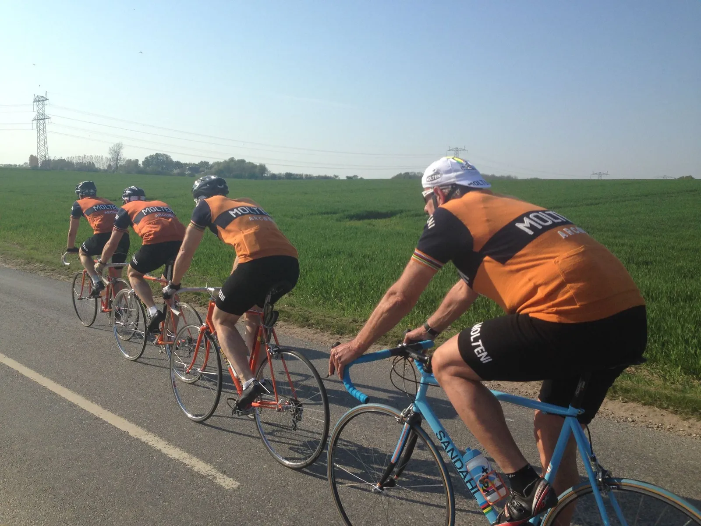
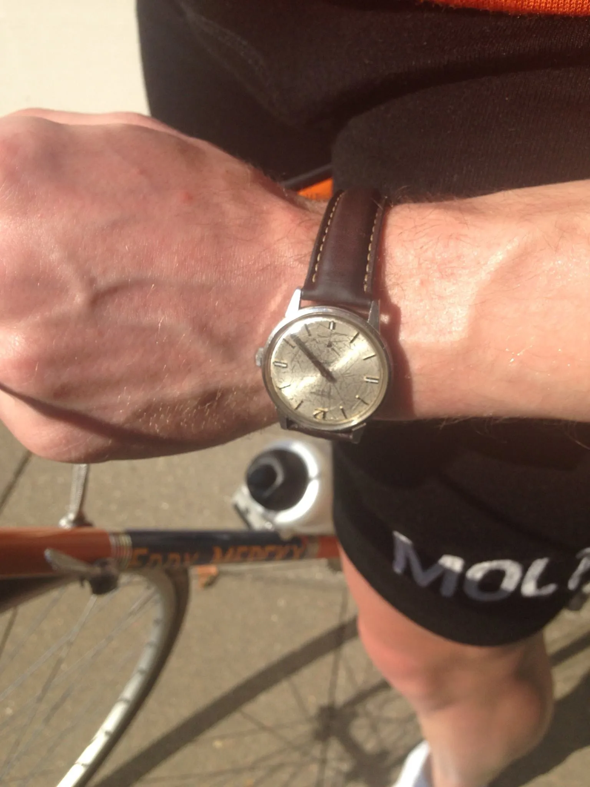
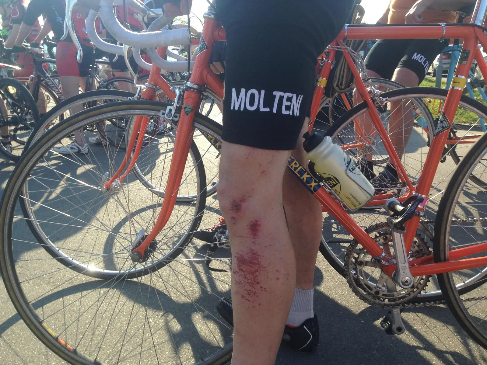

DGI Holdløb Mårslet: Smertelig tæt på podiet

Det Orange Eksprestog skar sig gennem landskabet ved DGI Holdløb Mårslet denne usædvanlige smukke sommeraften.
Med Kaptajn Sandahl ved roret og med Kasper Sørensen, Eigil Leegaard, Grane Maaløe og Niels Bjørnsteen i motorrummet, kørte Squadra Molteni en flot 4. plads hjem ved DGI-holdløbet i Mårslet.
Spænding og høje forventninger dirrede i den lune sommerluft. Squadra Molteni var seedet – og skulle starte næstsidst af de 12 hold, der stillede til start på den 4 x 11 km forholdsvis flade og let tekniske rute.
Pinlig UCI bøde for sorte sokker
Inden Det Orange Eksprestog rullede ud på en opvarmningsomgang, var der en mindre krise på holdet: Kaptajn Sandahl møder frem med kun én hvid cykelstrømpe i tasken!
Sandahl må bide i den sure sok, og hive et par sorte strømper på – som strakt bliver spottet af en UCI-kommissær, der uden at løfte blikket, udskriver en bøde på 50 schweizerfranc.
Sandahl kunne ydermere også melde om pollen-atack. Han mente, at hans vejrtrækning var nedsat med næsten 50%. Og sidst, men ikke mindst, mødte Eigil Leegaard, der pt. er i storform, frem i forslået tilstand, med hudafskrabninger på både ben og arm.
Eigil havde været en tur i asfalten i forbindelse med højdetræningslejr i Harzen i Kr. Himmelfartsferien.

DGI Holdløb Mårslet: Vi kører som vi plejer
Opvarmningsomgangen gik ganske fint – og eksprestoget rullede ind til perronen og var klar til start. Ét minut før start lægger Kaptajn Sandal taktikken:
– Nå… vi kører som vi plejer, og vi sætter farten op til sidst, tilføjede Grane.
Og så kørte toget!
På første omgang var der dog lidt udfordringer. Eigil kæmpede med at få kadaveret i gang. Men da først sårene på alle hans hudafskrabninger var sprækket, kom der for alvor gang i kedlerne.
Grane kom lidt for langt ud i et sving, og måtte en tur i grøften. Heldigvis gik det ikke ud over hans frisklimede lukkede ringe – og Grane var hurtigt oppe i slipstrømmen af toget (Sandahl har dog beregnet, at episoden kostede holdet 5 minutter. Mindst!)
På anden omgang kører toget optimalt. En supermotionist på træningstur i stram lycra og carbon bliver overrasket, da han pludseligt bliver overhalet af 5 stålcykler med uldbeklædte halvgamle mænd ovenpå.
Han forsøge et øjeblik at hægte sig på, men Eigil sætter sig forrest – og Det Orange Eksprestog efterlader supermotionisten i en sky af stål og krom.
Anden omgang bliver kørt på 17:39.
Ekspressen smider kul på
Tredje omgang. Alt er i flow. Rutens sving bliver angrebet – og på de lange lige stykker sætter Kasper for alvor den store turbo-diesel til. En veninde, der er til grill-party i en nærtliggende have, ser Det Orange Eksprestog. Hun forsøget at tage et foto, men autofokus må give op…
Tredje omgang bliver kørt på 17:48.
På fjerde og sidste omgang lukker både Bjørnsteen og Sandahl op for afterburneren. Toget kører svimlende stærkt – og det gamle stål holder. Og dog. Eigils sadel er rystet løs, men det ænser han ikke før toget er i mål.
Fjerde omgang bliver kørt på 17:27 – og hele løbet blev kørt med lidt over 37 km i snit.

Lige uden for podiet
Squadra Moltenis orange eksprestog ender på en 4. plads. Et lille nederlag, da målet var en podieplads. Men da det lokale Mårslet-hold havde købt sig til en 1. plads, måtte det naturligvis give lidt forskydninger. Sådan er dét – sådan er gamet.
Squadra Molteni tog sig en Molteni-tudekiks, Eigil et plaster på såret og et stykke kage, som vores dejlige Maria havde bagt. Det hjalp.

Herfra sendes store roser efter DGI og Mårslet Cykelmotion for et utrolig flot arrangement, lækker rute, super gode flagvagter – og ikke mindst grillpølser og hindbærbrus efterfølgende. Fremragende!